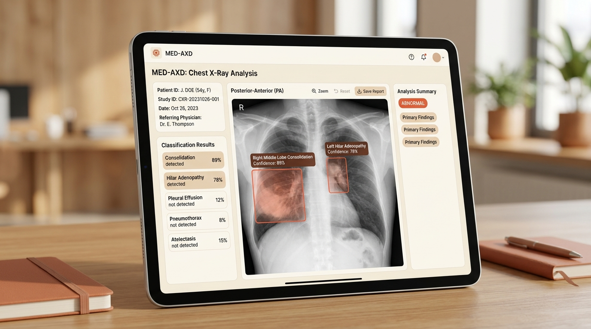

AI-Based Chest X-Ray Detection & Classification
Healthcare UI/UX • Computer Vision • Python / CNN
An academic exploratory project developed to investigate how convolutional neural networks (CNNs) can classify common pulmonary conditions (such as consolidation, effusion, and pneumonia) from chest radiographs, paired with an ethical, transparent physician-assistance dashboard concept.
Academic Problem Statement
Radiologists face significant cognitive workloads when evaluating voluminous radiographic datasets under acute time pressure. The academic objective was to evaluate transfer learning models to assist—not replace—clinicians by flagging probable abnormalities for prioritized review.
Academic Scope: This project is an exploratory college study. It avoids unsubstantiated clinical efficacy claims and is explicitly framed as an academic learning milestone in computer vision.
Technical Pipeline & Methods
- Data Augmentation: Normalized chest X-ray images, applied random rotation, zooming, and contrast enhancement to prevent model overfitting.
- Model Architecture: Evaluated convolutional neural networks (ResNet-50 / DenseNet backbones) with binary cross-entropy loss functions.
- Confidence Metrics: Outputted softmax classification probabilities alongside localized heatmap region suggestions.
UI/UX Design Considerations
- Trust & Explainability: Designed clean bounding indicators with explicit percentage confidence labels so medical personnel can verify reasoning.
- Visual Calm: Used warm ivory and soft muted tones instead of stark neon alerts to minimize screen fatigue in hospital diagnostic rooms.
- Accessibility: High-contrast radiological viewing mode with non-color-dependent anomaly flags.